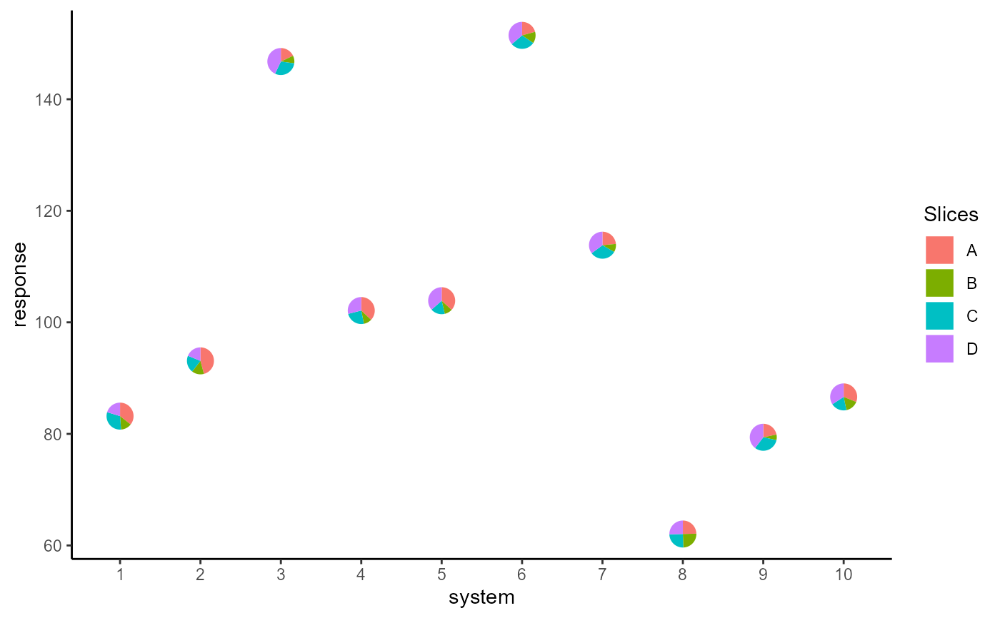
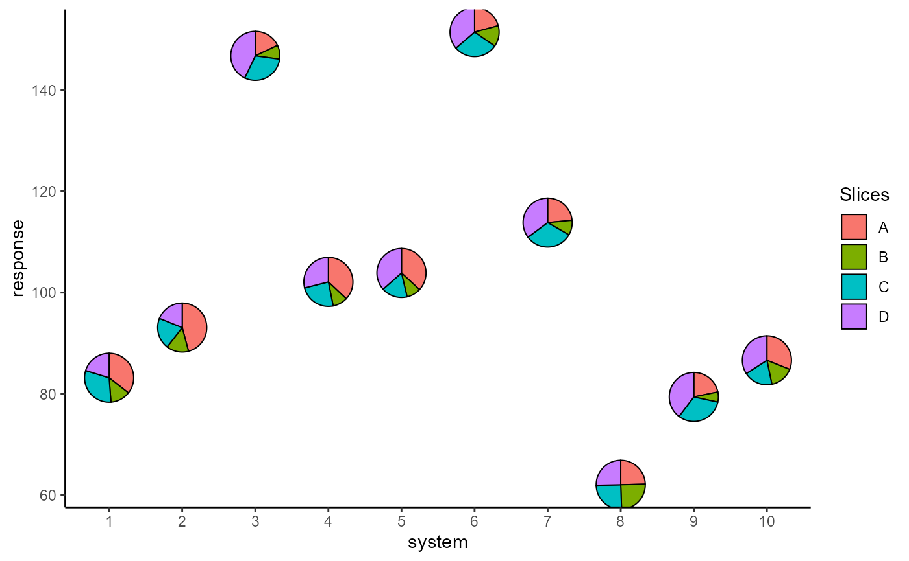
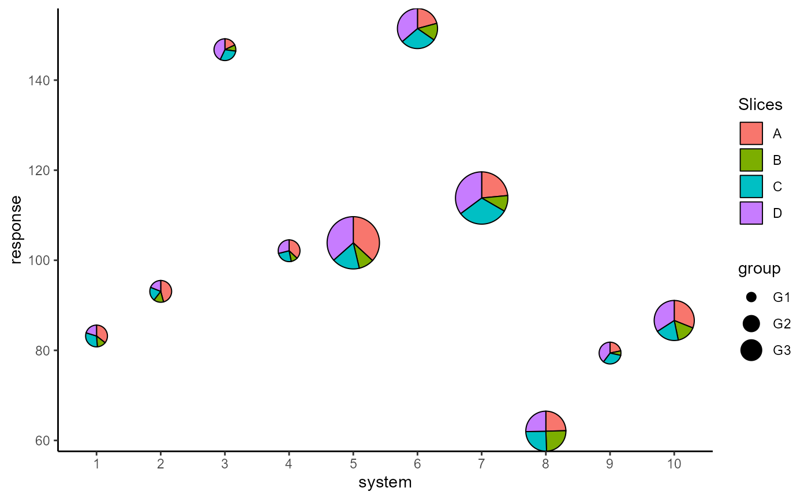
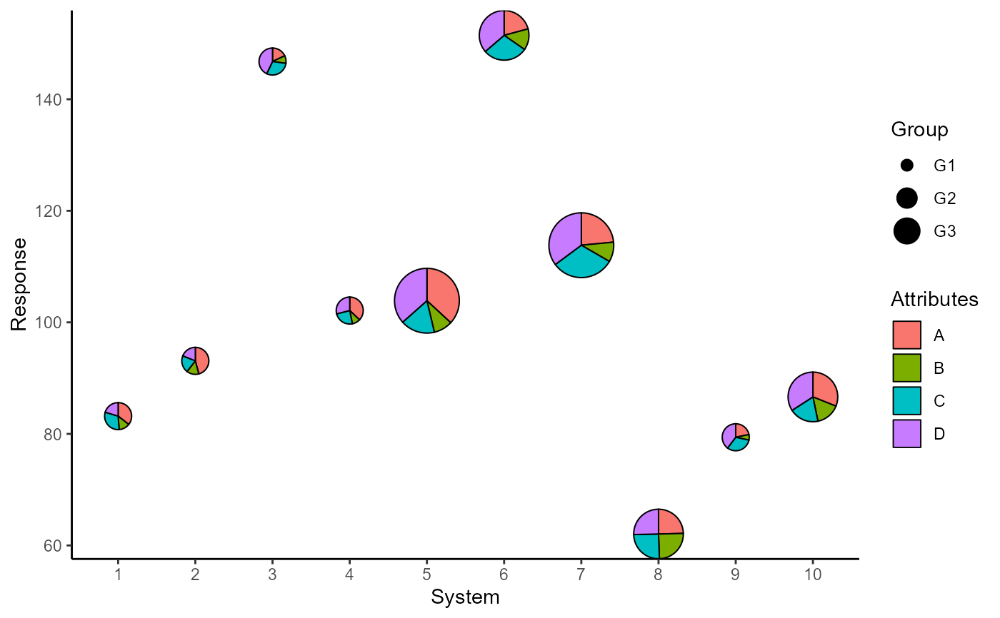
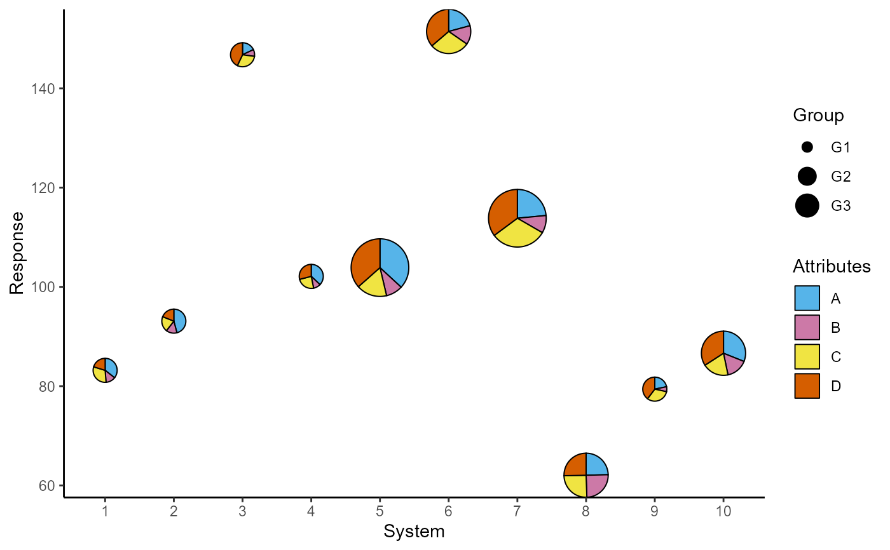

Scatter plot with points replaced by axis-invariant pie-chart glyphs
Source:R/geom_pie_glyph.R
geom_pie_glyph.RdThis geom replaces the points in a scatter plot with pie-chart glyphs showing the relative proportions of different categories. The pie-chart glyphs are independent of the plot dimensions, so won't distort when the plot is scaled. The ideal dataset for this geom would contain columns with non-negative values showing the magnitude of the different categories to be shown in the pie glyphs (The proportions of the different categories within the pie glyph will be calculated automatically). The different categories can also be stacked together into a single column according to the rules of tidy-data (see vignette('tidy-data') or vignette('pivot') for more information).
Usage
geom_pie_glyph(
mapping = NULL,
data = NULL,
slices,
values = NA,
stat = "identity",
position = "identity",
na.rm = FALSE,
show.legend = NA,
inherit.aes = TRUE,
...
)Arguments
- mapping
Set of aesthetic (see Aesthetics below) mappings to be created by
aes()oraes_(). If specified and inherit.aes = TRUE (the default), it is combined with the default mapping at the top level of the plot. You must supply mapping if there is no plot mapping.- data
The data to be displayed in this layer of the plot.
The default,NULL, inherits the plot data specified in theggplot()call.
Adata.frame, or other object, will override the plot data. All objects will be fortified to produce a data frame. Seefortify()for which variables will be created.
Afunctionwill be called with a single argument, the plot data. The return value must be adata.frame, and will be used as the layer data. Afunctioncan be created from aformula(e.g. ~head(.x, 10)).- slices
Each pie glyph in the plot shows the relative abundances of a set of categories; those categories are specified by this argument and should contain numeric and non-negative values. The names of the categories can be the names of individual columns (wide format) or can be stacked and contained in a single column (long format using
pivot_longer()). The categories can also be specified as the numeric indices of the columns.- values
This parameter is not needed if the data is in wide format. The default is
NAassuming that the categories are in separate columns. However, if the pie categories are stacked in one column, this parameter describes the column for the values of the categories shown in the pie glyphs. The values should be numeric and non-negative and the proportions of the different slices within each observation will be calculated automatically.- stat
The statistical transformation to use on the data for this layer, either as a
ggproto Geomsubclass or as a string naming the stat stripped of thestat_prefix (e.g."count"rather than"stat_count")- position
Position adjustment, either as a string naming the adjustment (e.g.
"jitter"to useposition_jitter), or the result of a call to a position adjustment function. Use the latter if you need to change the settings of the adjustment.- na.rm
If all slices for an observation are
NA, the observation is dropped while if at least one slice is not NA, the other slices are assumed to be 0. This parameter indicates whether the user is notified about these changes. IfFALSE, the default, user is given a warning. IfTRUE, observations are silently removed/modified to 0, without notifying the user.- show.legend
Logical. Should this layer be included in the legends?
NA, the default, includes if any aesthetics are mapped.FALSEnever includes, andTRUEalways includes.- inherit.aes
If
FALSE, overrides the default aesthetics, rather than combining with them- ...
Other arguments passed on to layer(). These are often aesthetics, used to set an aesthetic to a fixed value, like colour = "red" or radius = 1. They may also be parameters to the paired geom/stat.
Aesthetics
geom_pie_glyph understands the following aesthetics (required aesthetics are in bold):
x - variable to be shown on X-axis
y - variable to be shown on Y-axis
alpha - adjust opacity of the pie glyphs
radius - adjust the radius of the pie glyphs (in cm)
colour - specify colour of the border of pie glyphs
linetype - specify style of pie glyph borders
linewidth - specify width of pie glyph borders (in mm)
group - specify grouping structure for the observations (see
groupingfor more details)pie_group - manually specify a grouping variable for separating pie-glyphs with identical x and y coordinates (see
vignette("unusual-situations")for more information)
Examples
## Load libraries
library(tidyverse)
#> Warning: package 'tidyverse' was built under R version 4.2.2
#> ── Attaching packages ─────────────────────────────────────── tidyverse 1.3.2 ──
#> ✔ ggplot2 3.4.0 ✔ purrr 1.0.0
#> ✔ tibble 3.1.8 ✔ dplyr 1.0.10
#> ✔ tidyr 1.2.1 ✔ stringr 1.5.0
#> ✔ readr 2.1.3 ✔ forcats 0.5.2
#> Warning: package 'ggplot2' was built under R version 4.2.2
#> Warning: package 'tibble' was built under R version 4.2.2
#> Warning: package 'tidyr' was built under R version 4.2.2
#> Warning: package 'readr' was built under R version 4.2.2
#> Warning: package 'purrr' was built under R version 4.2.2
#> Warning: package 'dplyr' was built under R version 4.2.2
#> Warning: package 'stringr' was built under R version 4.2.2
#> Warning: package 'forcats' was built under R version 4.2.2
#> ── Conflicts ────────────────────────────────────────── tidyverse_conflicts() ──
#> ✖ dplyr::filter() masks stats::filter()
#> ✖ dplyr::lag() masks stats::lag()
#> ✖ ggplot2::scale_radius() masks PieGlyph::scale_radius()
library(PieGlyph)
## Simulate raw data
set.seed(123)
plot_data <- data.frame(response = rnorm(10, 100, 30),
system = 1:10,
group = sample(size = 10,
x = c('G1', 'G2', 'G3'),
replace = TRUE),
A = round(runif(10, 3, 9), 2),
B = round(runif(10, 1, 5), 2),
C = round(runif(10, 3, 7), 2),
D = round(runif(10, 1, 9), 2))
head(plot_data)
#> response system group A B C D
#> 1 83.18573 1 G1 7.14 2.65 6.20 4.07
#> 2 93.09468 2 G1 7.77 2.48 3.49 3.20
#> 3 146.76125 3 G1 3.15 1.61 5.24 7.52
#> 4 102.11525 4 G1 5.87 1.56 3.83 4.59
#> 5 103.87863 5 G3 7.55 1.93 3.51 7.48
#> 6 151.45195 6 G2 4.30 2.86 6.01 7.50
## Basic plot
ggplot(data = plot_data, aes(x = system, y = response))+
geom_pie_glyph(slices = c('A', 'B', 'C', 'D'),
data = plot_data)+
theme_minimal()

## Change pie radius and border colour
ggplot(data = plot_data, aes(x = system, y = response))+
# Can also specify slices as column indices
geom_pie_glyph(slices = 4:7, data = plot_data,
colour = 'black', radius = 0.5)+
theme_minimal()

## Map radius to a variable
p <- ggplot(data = plot_data, aes(x = system, y = response))+
geom_pie_glyph(aes(radius = group),
slices = c('A', 'B', 'C', 'D'),
data = plot_data, colour = 'black')+
theme_minimal()
p

## Add custom labels
p <- p + labs(x = 'System', y = 'Response',
fill = 'Attributes', radius = 'Group')
p

## Change slice colours
p + scale_fill_manual(values = c('#56B4E9', '#CC79A7',
'#F0E442', '#D55E00'))

##### Stack the attributes in one column
# The attributes can also be stacked into one column to generate
# the plot. This variant of the function is useful for situations
# when the data is in tidy format. See vignette('tidy-data') and
# vignette('pivot') for more information.
plot_data_stacked <- plot_data %>%
pivot_longer(cols = c('A','B','C','D'),
names_to = 'Attributes',
values_to = 'values')
head(plot_data_stacked, 8)
#> # A tibble: 8 × 5
#> response system group Attributes values
#> <dbl> <int> <chr> <chr> <dbl>
#> 1 83.2 1 G1 A 7.14
#> 2 83.2 1 G1 B 2.65
#> 3 83.2 1 G1 C 6.2
#> 4 83.2 1 G1 D 4.07
#> 5 93.1 2 G1 A 7.77
#> 6 93.1 2 G1 B 2.48
#> 7 93.1 2 G1 C 3.49
#> 8 93.1 2 G1 D 3.2
ggplot(data = plot_data_stacked, aes(x = system, y = response))+
# Along with slices column, values column is also needed now
geom_pie_glyph(slices = 'Attributes', values = 'values')+
theme_minimal()